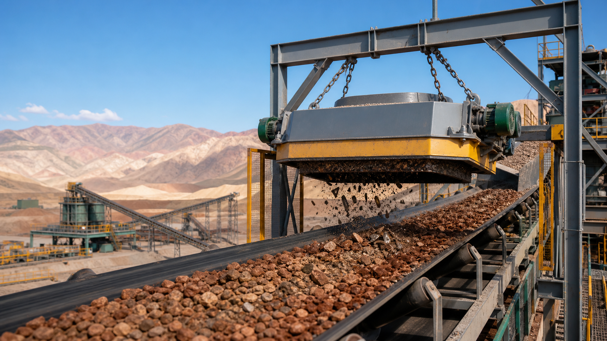

About
Cowinmagnet LATAM
Proveedor de servicios de exportacion de equipos de separacion magnetica y socio de seleccion tecnica para compradores B2B.
Empresa
Quzhou Qiying Import & Export Co., Ltd.
Cowinmagnet coordina seleccion de productos, matching tecnico, OEM/ODM, recursos de suministro, inspeccion de calidad, logistica y comunicacion posventa.
Declaracion de precision: no se afirma fabrica, oficina, bodega, stock, centro de servicio ni equipo local en Chile o Peru sin evidencia verificable.
Nota: las imagenes actuales son ilustrativas para desarrollo local.